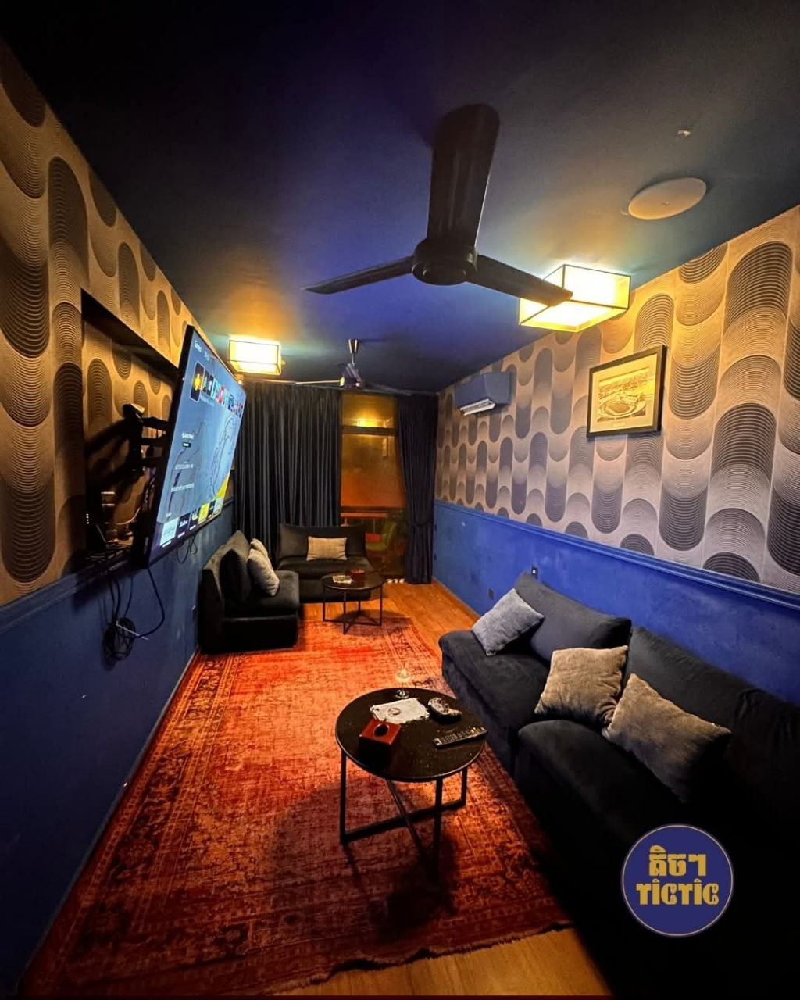
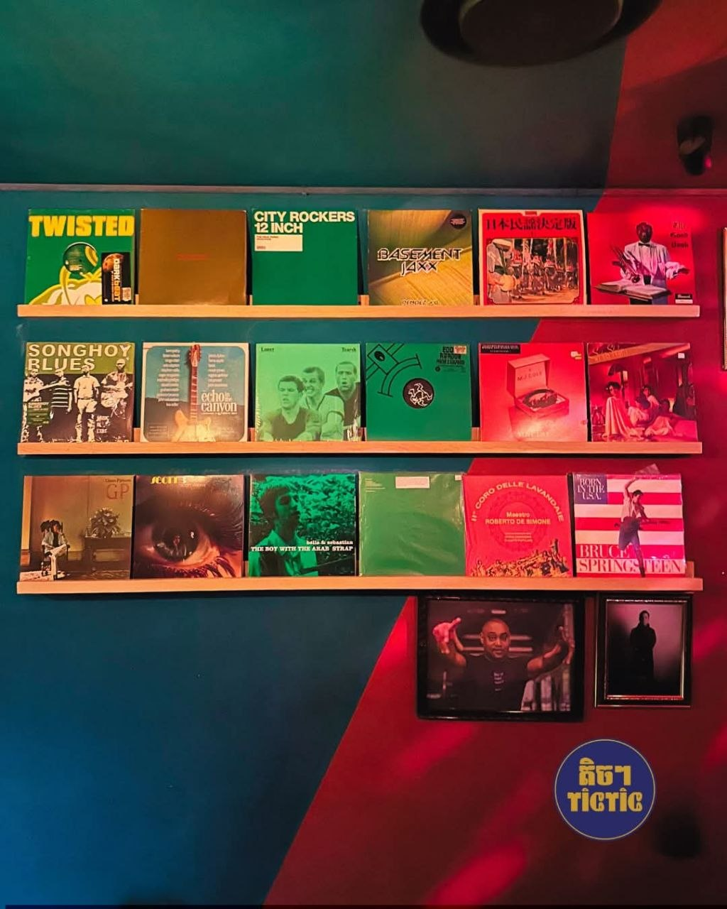
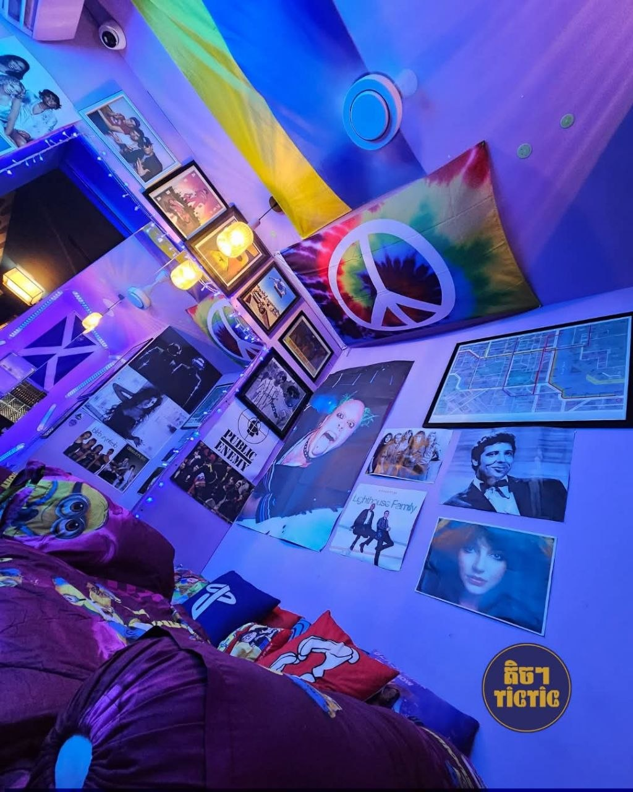

Bar•Cinema•Music•Art
The one place in Phnom Penh I keep coming back to
Tic Tic is a unique bar designed for those who truly appreciate art, offering more than just drinks but a complete cultural experience. Guests can relax while watching classic films that carry a sense of nostalgia and storytelling. At the other end, they are accompanied by carefully selected music that is both meaningful and enjoyable. The walls are filled with artwork that showcase creativity and visual expression, transforming the space into something that feels like a small art gallery. Every element, from the visuals to the sound, works together to create a warm and inspiring atmosphere. Tic Tic is not just a place to hang out, it’s a space where people can immerse themselves in an environment that celebrates art in all its forms.
🎥
Nights with classic films
Handpicked films shown on select nights. No algorithm. Just real cinema chosen with care.

sourcePhoto credit: Tic Tic
🎶
Music that sets the mood
Live sets or a curated playlist. The sound at Tic Tic always feels like it was chosen just for that night.

sourcePhoto credit: Tic Tic
✒️
An artistic expressions area
The space itself feels curated with care, something worth looking at wherever you turn your eyes.

sourcePhoto credit: Tic Tic
Why This Place?
What I love about Tic Tic is that every corner of the place feels intentional, as if it has its own voice and perspective. Nothing comes across as generic or randomly placed just to fill space; instead, every detail seems carefully chosen to contribute to a larger artistic vision. From the decor to the music being playedto the films being shown, there is a clear sense of thought and identity behind it all. It’s evident that someone created this space with genuine passion and a deep love for art, and that authenticity is something you can feel immediately the moment you walk in, making the experience both personal and memorable.